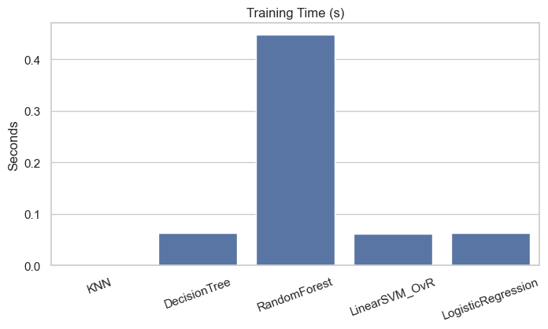
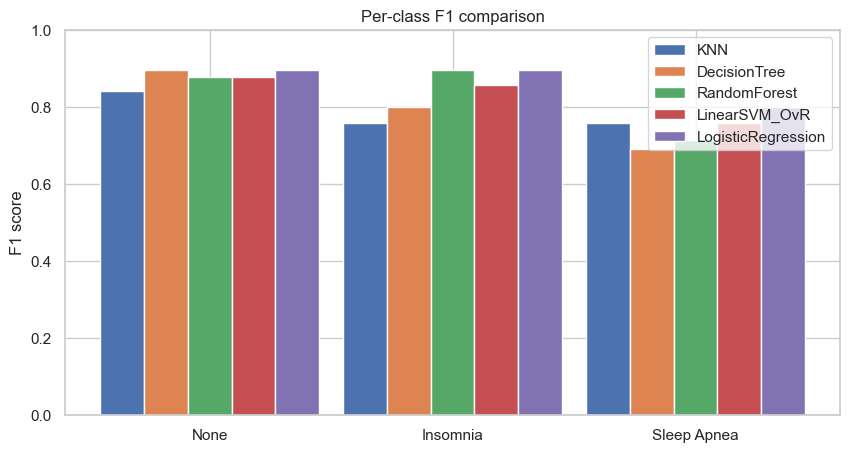
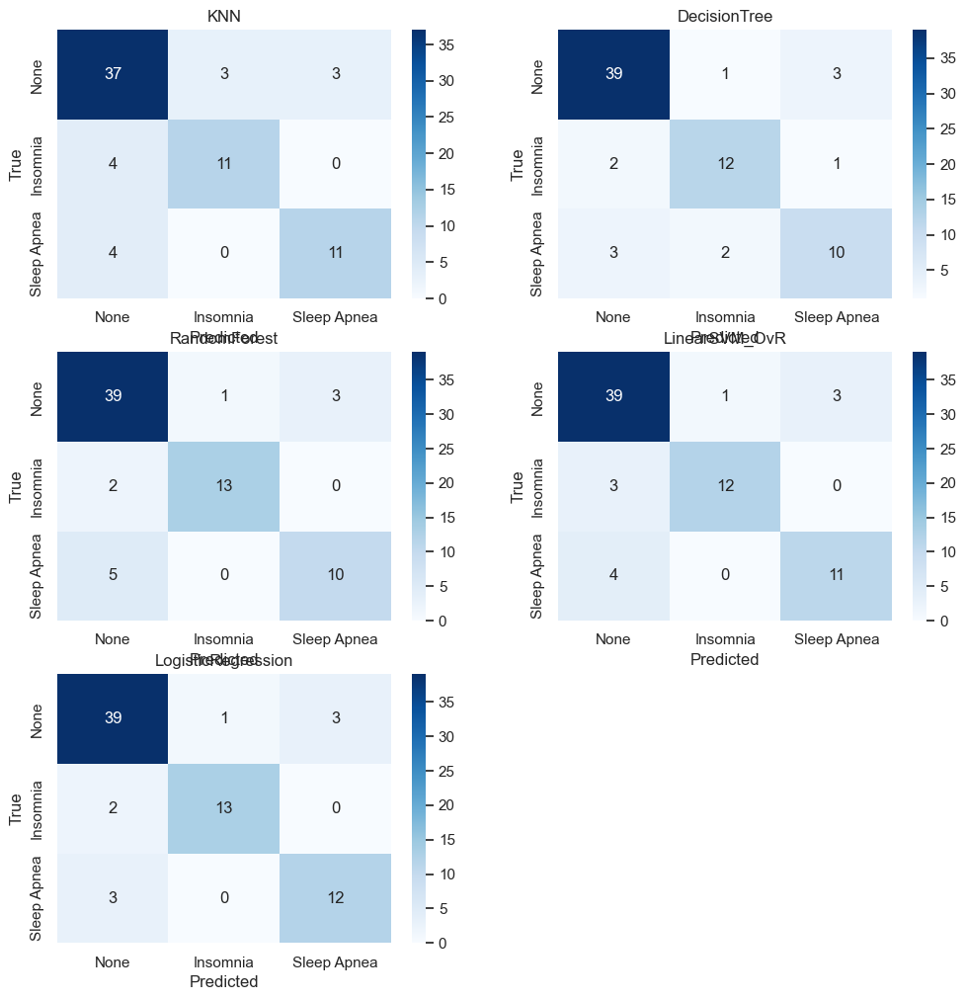
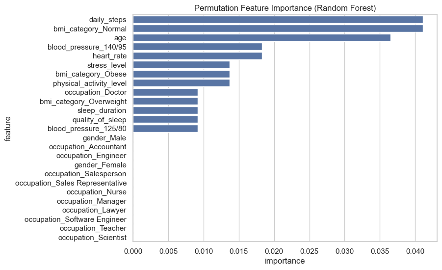

Sleep Disorder Models Comparison
Summary
- KNN: accuracy=0.8082, training_time=0.00s
- DecisionTree: accuracy=0.8356, training_time=0.06s
- RandomForest: accuracy=0.8493, training_time=0.45s
- LinearSVM_OvR: accuracy=0.8493, training_time=0.06s
- LogisticRegression: accuracy=0.8767, training_time=0.06s
Plots




